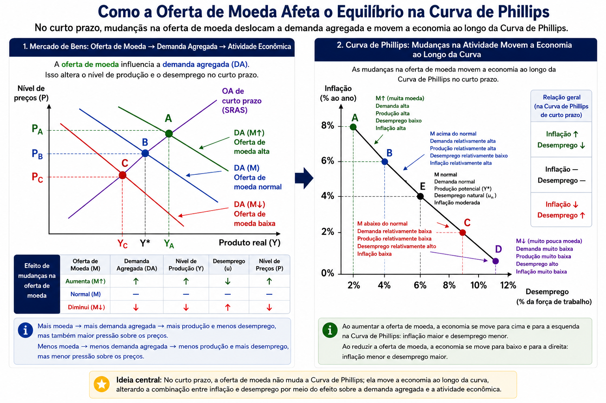

Aula 1 - Os 10 Princípios da Economia
01 — As pessoas enfrentam escolhas
03 — Pessoas racionais pensam na margem
04 — As pessoas respondem a incentivos
05 — O comércio pode beneficiar a todos
06 — Os mercados são geralmente uma boa maneira de organizar a atividade econômica
07 — O governo pode melhorar os resultados do mercado
08 — O padrão de vida depende da produtividade
09 — Os preços sobem quando há moeda demais na economia
10 — Os preços sobem quando há moeda demais na economia
📈 Curva de Phillips e Política Monetária
A palavra economia tem origem no grego oikonomos, que significa:
“aquele que administra uma casa”.
Assim como uma família precisa decidir como utilizar seu tempo, renda e outros recursos, uma sociedade precisa decidir como utilizar os recursos de que dispõe.
Os recursos disponíveis na sociedade são limitados, enquanto as necessidades e os desejos são numerosos.
Portanto, não é possível produzir todos os bens e serviços que as pessoas desejam.
ESCASSEZ → recursos limitados diante de necessidades e desejos.
Economia é o estudo de como a sociedade administra seus recursos escassos.
A existência da escassez obriga indivíduos e sociedades a fazerem escolhas sobre a utilização dos recursos disponíveis.
O que produzir?
Como produzir?
Para quem produzir?
Recursos escassos → necessidade de escolhas → problema econômico
Para obter algo que desejamos, normalmente precisamos abrir mão de outra coisa que também desejamos.
Como os recursos são escassos e os desejos não exauríveis, fazer escolhas significa comparar objetivos concorrentes.
Exemplos:
Tempo: Estudar Economia ou estudar outra disciplina?
Renda: Consumir hoje ou poupar para o futuro?
Sociedade: Eficiência ou equidade?
Outros exemplos: defesa × bens de consumo • produção × meio ambiente • trabalho × lazer.
Conceito central:
A existência de uma escolha não determina qual deve ser feita, mas significa reconhecer que toda escolha envolve alternativas e custos.
Como as pessoas enfrentam escolhas(trade-offs)?
tomar uma decisão exige comparar os custos e benefícios das alternativas disponíveis. Assim, o:
Custo de oportunidade: é aquilo de que abrimos mão para obter alguma coisa.
Exemplos:
Universidade: Qual é o custo de fazer uma graduação? Não apenas mensalidades, livros ou transporte, mas também a renda que poderia ser obtida trabalhando durante esse período.
Tempo: Uma hora utilizada estudando Economia tem como custo de oportunidade aquilo que você faria com essa hora
Recursos públicos: os recursos para construir um hospital não podem ser utilizados para outros fins.
Conceito central:
O custo de uma escolha não é aquilo que pagamos monetariamente, mas sim o valor da melhor alternativa de que abrimos mão ao fazê-la.
Pessoas racionais procuram, de forma sistemática, fazer o melhor possível para alcançar seus objetivos, dadas as oportunidades e restrições existentes.
As decisões econômicas raramente são do tipo “tudo ou nada”. Em geral, decidimos se devemos fazer um pouco mais ou um pouco menos de alguma coisa.
Pensar na margem significa avaliar uma pequena mudança incremental em relação à situação atual.
Exemplo: devo fazer uma ligação de 10 minutos?
Plano mensal do telefone: $40
Uso habitual: 100 minutos
Preço por minuto adicional: $0,50
Custo total habitual = $40 + (100 × $0,50) = $90
Uma ligação adicional de 10 minutos gera um benefício estimado em $7.
Raciocínio não racional:
Custo médio = $90 ÷ 100 = $0,90/minuto → 10 minutos = $9
Raciocínio marginal:
CM da nova ligação = 10 × $0,50 = $5
BM = $7 > CM = $5 → fazer a ligação.
Conceito central
Uma pessoa racional realiza uma ação adicional quando seu benefício marginal é maior que seu custo marginal. O que importa para a decisão não é necessariamente o custo médio ou total, mas o que muda ao escolher uma unidade a mais.
Incentivo é uma recompensa ou punição que altera os custos ou benefícios de uma ação e, portanto, induz as pessoas a mudar seu comportamento.
Como pessoas racionais comparam custos e benefícios, mudanças nos incentivos podem alterar suas escolhas.
Exemplo: o preço como incentivo
Se o preço da maçã aumenta:
Consumidores: preço ↑ → custo de comprar maçãs ↑ → consumo ↓
Produtores: preço ↑ → benefício de produzir maçãs ↑ → produção ↑
Assim, os preços funcionam como incentivos e ajudam a coordenar as decisões de consumidores e produtores.
Exemplo: políticas públicas
Imposto ↑ → gasolina mais cara → mudança de comportamento
As pessoas podem dirigir menos, utilizar transporte público, compartilhar viagens ou escolher veículos mais econômicos.
Consequências não intencionais
Uma política pode alterar os incentivos de maneiras que não eram seu objetivo inicial. Por isso, não basta analisar apenas seu efeito direto: é preciso considerar como as pessoas mudarão seu comportamento em resposta aos incentivos.
Conceito central
Mudança nos custos ou benefícios → mudança nos incentivos → mudança no comportamento.
Ao analisar uma decisão ou política econômica, devemos perguntar como isso altera os incentivos das pessoas?
🎯 Pergunta 1 — Trade-off
Qual foi uma escolha importante que você fez recentemente em que, para conseguir uma coisa, precisou abrir mão de outra, explique como isso foi um trade-off?
💰 Pergunta 2 — Custo de oportunidade
Dê um exemplo de uma escolha que tenha ao mesmo tempo um custo monetário (dinheiro) e um custo não monetário (tempo, lazer, esforço etc.) e explique custo de oportunidade.
🎁 Pergunta 3 — Incentivos
Lembre-se de algum incentivo que seus pais ou responsáveis já ofereceram para tentar mudar seu comportamento. Qual era o incentivo e o que eles queriam que você fizesse? Funcionou ou houve adaptação de comportamento?
Países, empresas e indivíduos podem ser concorrentes em algumas atividades e, ao mesmo tempo, parceiros comerciais em outras.
O comércio não precisa ser um jogo perde → perde
Ao contrário, as trocas voluntárias podem permitir que ambos os lados obtenham benefícios.
Por quê?
O comércio permite que indivíduos e países se especializem nas atividades em que são relativamente melhores e mais eficientes e realizem trocas com os demais.
Exemplo: uma família
Imagine que uma família decidisse não realizar nenhuma troca com outras pessoas.
Ela precisaria:
Ao realizar trocas, cada pessoa pode se especializar em determinadas atividades e obter dos demais aquilo que não produz.
Especialização → Trocas → Maior variedade de bens e serviços
Conceito central:
O comércio permite que pessoas e países se especializem e troquem entre si, possibilitando que tenham acesso a uma maior variedade de bens e serviços. Por isso, no comércio, competição e cooperação podem existir simultaneamente.
Em uma economia de mercado, a alocação dos recursos não é determinada por um planejador central, mas pelas decisões descentralizadas de milhões de famílias e empresas.
Famílias → decidem onde trabalhar e o que comprar.
Empresas → decidem quem contratar, o que produzir e quanto produzir.
Essas decisões são coordenadas por meio dos mercados.
Os preços funcionam como sinais que transmitem informações e orientam as decisões:
Preço ↑ → consumidores tendem a comprar menos → produtores têm incentivo para produzir mais.
Preço ↓ → consumidores tendem a comprar mais → produtores têm menor incentivo para produzir.
Assim, os preços ajudam a coordenar oferta e demanda sem que uma autoridade central precise determinar cada decisão.
A “mão invisível” — Adam Smith
Ao perseguirem seus próprios interesses, compradores e vendedores interagem nos mercados como se fossem conduzidos por uma “mão invisível”.
Interesse individual → interação nos mercados → preços → coordenação das decisões
Em uma economia de mercado, os preços são um mecanismo de coordenação: carregam informações sobre o valor atribuído aos bens pelos consumidores e os custos de produzi-los.
Por isso, mercados conseguem, em muitos casos, coordenar a utilização de recursos escassos por meio de decisões descentralizadas.
Os mercados funcionam melhor quando existem instituições que garantem as regras do jogo.
Direitos de propriedade permitem que indivíduos e empresas possuam e controlem recursos escassos.
Sem contratos, tribunais e proteção da propriedade, os incentivos para produzir, investir e realizar trocas diminuem.
Há dois grandes objetivos:
1. Promover eficiência
Quando o mercado, sozinho, não aloca os recursos de forma eficiente, ocorre uma falha de mercado.
Externalidades: ações de uma pessoa ou empresa afetam terceiros.
Exemplo: poluição → parte do custo da produção é suportada por pessoas que não participaram da decisão.
Poder de mercado: uma empresa ou pequeno grupo consegue influenciar significativamente os preços.
Exemplo: um único fornecedor de um bem essencial pode restringir a oferta e cobrar preços maiores.
2. Promover equidade
Mesmo quando um mercado é eficiente, seus resultados podem gerar grandes desigualdades econômicas.
Políticas públicas podem buscar alterar a distribuição de renda e ampliar o acesso a bens e serviços.
Mercados geralmente organizam bem a atividade econômica, mas não são perfeitos.
A intervenção pública pode ser justificada quando busca corrigir falhas de mercado ou promover maior equidade.
Isso não significa que toda intervenção governamental melhora os resultados: políticas públicas também podem produzir erros, distorções e consequências não intencionais.
Existem diferenças no padrão de vida entre países e também ao longo do tempo.
A principal explicação para essas diferenças está na produtividade.
Produtividade é a quantidade de bens e serviços produzidos por unidade de trabalho.
Produtividade ↑ → Produção por trabalhador ↑ → Renda ↑ → Padrão de vida ↑
Países nos quais os trabalhadores conseguem produzir mais por hora tendem a apresentar maiores níveis de renda e melhores padrões de vida.
Da mesma forma, o crescimento da produtividade ao longo do tempo é fundamental para sustentar o crescimento da renda.
Capital físico: máquinas, equipamentos e infraestrutura disponíveis aos trabalhadores.
Capital humano: educação, conhecimento, qualificação e experiência.
Tecnologia: novas formas de produzir bens e serviços com os recursos disponíveis.
Imagine dois trabalhadores realizando a mesma atividade:
Trabalhador A → 10 unidades por hora
Trabalhador B → 20 unidades por hora
Se o trabalhador B dispõe de melhores equipamentos, qualificação ou tecnologia, consegue gerar mais produto com a mesma quantidade de trabalho.
No longo prazo, aumentar persistentemente o padrão de vida exige aumentar a capacidade da economia de produzir bens e serviços.
Assim:
crescimento econômico sustentado depende fundamentalmente do crescimento da produtividade.
Inflação é o aumento persistente do nível geral de preços de uma economia.
Quando os preços aumentam, cada unidade monetária passa a comprar uma quantidade menor de bens e serviços:
Nível de preços ↑ → Poder de compra da moeda ↓
Qual é a relação com a quantidade de moeda?
Em episódios de inflação elevada e persistente, um fator fundamental é o crescimento excessivo da quantidade de moeda em relação à capacidade da economia de produzir bens e serviços.
De forma simplificada:
Quantidade de moeda ↑↑ e ~ Produção → Nível geral de preços ↑
Uma intuição simples: Imagine uma economia com determinada quantidade de bens disponíveis.
Se a quantidade de dinheiro utilizada para comprar esses bens cresce muito mais rapidamente que a produção, haverá mais unidades monetárias disputando os bens disponíveis.
Mais moeda ≠ automaticamente mais riqueza
A capacidade de produzir bens e serviços é que determina os recursos reais disponíveis à sociedade e não a quantidade de moeda.
Conceito central: No longo prazo, inflação está associada ao crescimento excessivo da quantidade de moeda. Por isso, a estabilidade monetária é uma condição importante para preservar o poder de compra da moeda.
No curto prazo, políticas que estimulam a demanda agregada podem afetar inflação e desemprego em direções opostas.
Como funciona?
Demanda por bens e serviços ↑
→ empresas aumentam a produção
→ empresas contratam mais trabalhadores
→ desemprego ↓
Ao mesmo tempo:
Demanda ↑ → pressão sobre os preços ↑ → inflação ↑
Assim, no curto prazo, pode surgir um trade-off entre inflação e desemprego.
Por que isso importa?
Políticas monetárias e fiscais podem alterar a demanda agregada e, no curto prazo, influenciar a combinação entre inflação e desemprego.
Por exemplo, diante de uma recessão:
Política expansionista → Demanda ↑ → Produção ↑ → Emprego ↑
mas também pode gerar:
Demanda ↑ → Pressão inflacionária ↑
**Conceito central:*
No curto prazo, combater o desemprego pode envolver maior pressão inflacionária — e combater a inflação pode envolver custos em termos de atividade econômica e emprego.

🎯 Pergunta 1 — A economia como um todo
Quais são os três princípios que explicam como a economia funciona como um todo? Explique brevemente cada um deles.
🌎 Pergunta 2 — Comércio
Por que um país tende a se beneficiar ao comerciar com outros países, em vez de tentar produzir sozinho tudo aquilo de que necessita?
🏛️ Pergunta 3 — Mercados e governo
Por que utilizamos os mercados para organizar a atividade econômica? E, segundo os economistas, quando o governo pode melhorar os resultados produzidos pelos mercados?
Os 10 Princípios da Economia apresentam algumas das ideias fundamentais que orientam o pensamento econômico.
Eles não esgotam esses temas. Ao contrário, funcionam como um mapa inicial de conceitos que serão aprofundados ao longo do curso.
Ao longo das próximas aulas, voltaremos a temas como:
Neste primeiro capítulo, nosso objetivo foi desenvolver uma forma de pensar:
Recursos são escassos → escolhas são necessárias → escolhas têm custos → pessoas respondem a incentivos → decisões individuais interagem nos mercados → os resultados aparecem na economia como um todo.
Mesmo sendo apenas nossa introdução à Economia, os conceitos estudados hoje já permitem responder, por exemplo, questões de concursos públicos, como as três a seguir.
Isso mostra que estamos apenas no começo, mas as ferramentas apresentadas neste capítulo já são úteis para interpretar problemas econômicos e resolver questões concretas.
1 — Instituto UniFil — Prefeitura de Itambé/PR — Contador — 2020
Sobre os princípios gerais da Economia, julgue:
I. As pessoas respondem a incentivos. II. O custo de alguma coisa não corresponde àquilo de que se desiste para obtê-la. III. Os preços sobem quando o governo emite moeda em quantidade excessiva.
Qual a sequência correta?
2 — VUNESP — ARSESP — Agente de Suporte à Regulação — 2025
A regulação econômica pode ser justificada pela existência de falhas de mercado. Qual afirmação está correta?
3 — Instituto Consulplan — ARCE — Analista de Regulação Econômico-Financeiro — 2025
Qual das situações abaixo pode justificar a intervenção do governo em um mercado?